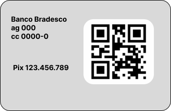
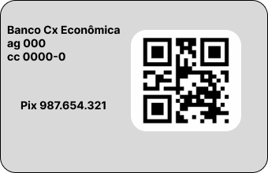

Ser um patrocinador do Instituto Um Passo de Cada Vez significa investir na educação e no desenvolvimento de crianças e adolescentes da comunidade da Pavuna. Como patrocinador, você pode contribuir financeiramente ou com outros recursos para apoiar nossas atividades e projetos.
Com sua ajuda, podemos oferecer aulas de reforço escolar, oficinas de arte e cultura, atividades esportivas, projetos educacionais e eventos comunitários para a nossa comunidade. Além disso, como patrocinador, você pode acompanhar o impacto do seu apoio e ver como ele está fazendo a diferença na vida das crianças e adolescentes da Pavuna.
Estamos sempre abertos a estabelecer parcerias de longo prazo com empresas, organizações e indivíduos que compartilham nossa visão e missão.
Agradecemos pelo seu interesse e esperamos contar com sua colaboração para transformar a realidade da nossa comunidade através da educação!